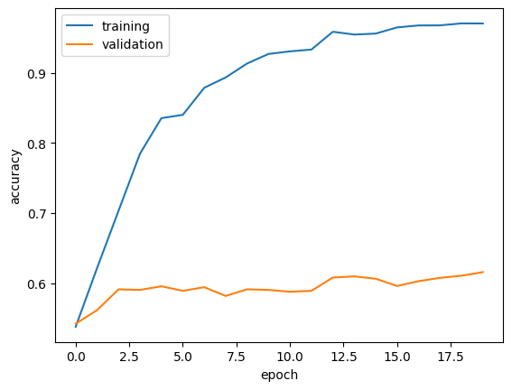
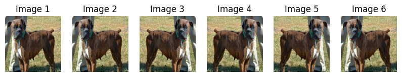
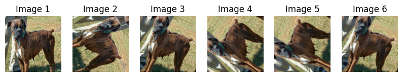
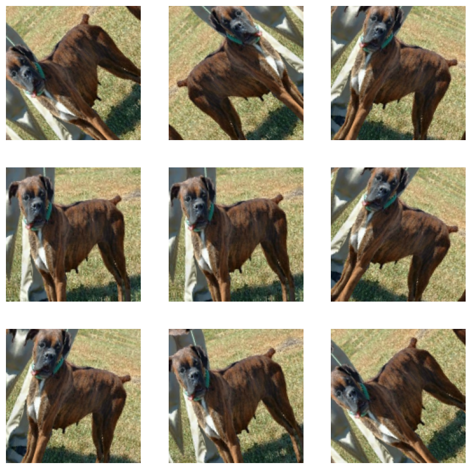
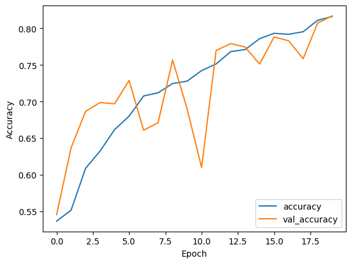
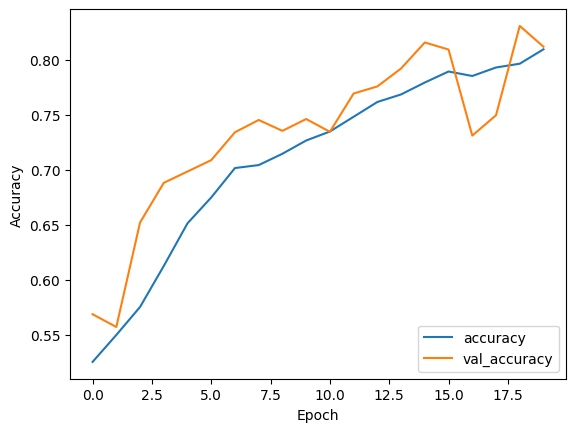
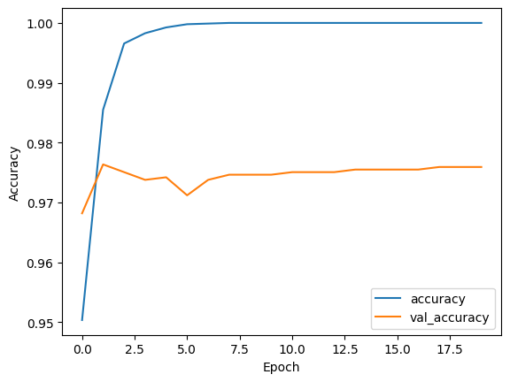

!pip install keras==2.15.0Requirement already satisfied: keras==2.15.0 in /usr/local/lib/python3.10/dist-packages (2.15.0)Jamie
March 4, 2024
Dog and Cat Images Classifications
In this section, we are going to use TensorFlow as primiary tool.
TensorFlow is a powerful tool for building and training machine learning models. It offers flexibility to work on different devices, scalability for large projects, and easy-to-use interfaces like Keras for beginners. With features like TensorBoard for visualization and a supportive community, TensorFlow is a popular choice for both learning and real-world applications.
Another well-know tool is PyTorch, which is developed by Facebook’s AI Research lab. PyTorch is known for its dynamic computation graph, making it more flexible for experimentation and research. It has gained popularity for its intuitive interface and strong support for deep learning.
The choice between PyTorch and TensorFlow often depends on factors such as project requirements, personal preferences, and familiarity with the frameworks. Here are some considerations for when to use each:
Use PyTorch: 1. Dynamic Computation Graphs: If you prefer a dynamic computation graph where the graph structure can change for each iteration, PyTorch might be a better choice. This flexibility is useful for research and experimentation, especially in fields like natural language processing and reinforcement learning.
Ease of Use: PyTorch is often praised for its simplicity and Pythonic syntax, making it more accessible for beginners and researchers who want to quickly prototype and experiment with different models.
Community and Ecosystem: While TensorFlow has a larger ecosystem due to its longer presence in the field, PyTorch has a rapidly growing community with strong support from both academia and industry. If you prefer a community that’s more focused on cutting-edge research and experimentation, PyTorch might be more suitable.
Use TensorFlow: 1. Static Computation Graphs: If you require a static computation graph where the graph structure is defined before execution, TensorFlow’s static graph paradigm might be more suitable. This can offer performance optimizations and easier deployment in production environments.
Scalability and Production Readiness: TensorFlow is well-suited for building and deploying large-scale production systems, thanks to its support for distributed computing, deployment options like TensorFlow Serving, and integration with tools like TensorFlow Extended (TFX) for end-to-end machine learning pipelines.
Wider Adoption and Support: TensorFlow has been around longer and has a larger user base, which means it has more resources, tutorials, and pre-trained models available. If you’re working on a project where existing resources and models are crucial, TensorFlow might be the better choice.
Ultimately, both PyTorch and TensorFlow are powerful frameworks with their own strengths and weaknesses. It’s a good idea to experiment with both and choose the one that best fits your specific project requirements and preferences.
Import libraries
Requirement already satisfied: keras==2.15.0 in /usr/local/lib/python3.10/dist-packages (2.15.0)The data we are going to use is cats_vs_dogs from tensorflow datasets, which is a commonly used dataset for binary image classification tasks. It contains images of cats and dogs, which are labeled accordingly 0 as cat 1 as dog.
Now we are going to load and split the “cats_vs_dogs” dataset using TensorFlow Datasets (TFDS) API into training, validation, and test sets.
train_ds, validation_ds, test_ds = tfds.load(
"cats_vs_dogs",
# 40% for training, 10% for validation, and 10% for test (the rest unused)
split=["train[:40%]", "train[40%:50%]", "train[50%:60%]"],
as_supervised=True, # Include labels
)
print(f"Number of training samples: {train_ds.cardinality()}")
print(f"Number of validation samples: {validation_ds.cardinality()}")
print(f"Number of test samples: {test_ds.cardinality()}")Downloading and preparing dataset 786.67 MiB (download: 786.67 MiB, generated: 1.04 GiB, total: 1.81 GiB) to /root/tensorflow_datasets/cats_vs_dogs/4.0.1...
Dataset cats_vs_dogs downloaded and prepared to /root/tensorflow_datasets/cats_vs_dogs/4.0.1. Subsequent calls will reuse this data.
Number of training samples: 9305
Number of validation samples: 2326
Number of test samples: 2326WARNING:absl:1738 images were corrupted and were skippedLet’s break down the code:
Loading the Dataset: - tfds.load("cats_vs_dogs", ...) : loads the “cats_vs_dogs” dataset using the TensorFlow Datasets (TFDS) API. The dataset is specified by its name.
Splitting the Dataset: - split=["train[:40%]", "train[40%:50%]", "train[50%:60%]"] : splits the dataset into three subsets: training, validation, and test sets. The percentages indicate the proportion of data allocated to each set. In this case, 40% of the data is allocated for training, 10% for validation, and 10% for testing.
Loading as Supervised: - as_supervised=True : This parameter indicates that the dataset should be loaded with labels. When set to True, the dataset will be returned as tuples (image, label) where image represents the input data (image) and label represents the corresponding label (cat or dog).
Printing Dataset Cardinalities: - train_ds.cardinality() : returns the number of elements in the training dataset. - validation_ds.cardinality() : returns the number of elements in the validation dataset. - test_ds.cardinality() : returns the number of elements in the test dataset.
Overall, this code snippet loads the “cats_vs_dogs” dataset, splits it into training, validation, and test sets, and prints the number of samples in each set. This is a common practice in machine learning to ensure that the dataset is properly divided for training, validation, and evaluation purposes.
The training dataset is used to teach the model, the validation dataset is used to fine-tune it, and the test dataset is used to evaluate its performance on unseen data. Splitting the dataset helps ensure the model learns effectively, generalizes well, and is properly evaluated.
Now since the picture have difference sizes, we resize them to a fixed size of 150x150.
Let’s break it down:
resize_fn = keras.layers.Resizing(150, 150) : creates a resizing layer using the Resizing class from the Keras API (a part of TensorFlow). The Resizing layer is configured to resize images to a target size of 150x150 pixels.
train_ds.map(lambda x, y: (resize_fn(x), y)) : maps the resizing operation to each sample in the training dataset. The map function applies the provided lambda function to each element of the dataset. In this case, the lambda function resizes the input image x using the resize_fn layer and keeps the label y unchanged. This effectively resizes each image in the training dataset to the specified size.
validation_ds.map(lambda x, y: (resize_fn(x), y)) and test_ds.map(lambda x, y: (resize_fn(x), y)), respectively.Purpose of Resizing: - Resizing the images to a uniform size (in this case, 150x150 pixels) is a common preprocessing step in computer vision tasks. It ensures that all images have the same dimensions, which is often required by machine learning models. This allows the model to process the images efficiently and ensures consistency during training. - Additionally, resizing can help reduce computational complexity and memory usage, especially when working with large datasets or when training deep learning models.
print('Number of train batches: %d' % tf.data.experimental.cardinality(train_ds))
print('Number of validation batches: %d' % tf.data.experimental.cardinality(validation_ds))
print('Number of test batches: %d' % tf.data.experimental.cardinality(test_ds))Number of train batches: 146
Number of validation batches: 37
Number of test batches: 37Batching: - train_ds.batch(batch_size) : This line batches the samples in the training dataset into groups or batches, where each batch contains batch_size number of samples, which is 64 in this case. Batching is a common technique used in machine learning to process multiple samples simultaneously, which can improve training efficiency. - Similarly, the validation and test datasets are also batched using validation_ds.batch(batch_size) and test_ds.batch(batch_size), respectively.
Prefetching: - prefetch(tf_data.AUTOTUNE) : This line prefetches data from the dataset to improve performance. The AUTOTUNE parameter allows TensorFlow to automatically determine the optimal number of elements to prefetch dynamically based on available resources and the current workload. Prefetching overlaps data preprocessing and model execution, reducing the time spent waiting for data during training. - Prefetching is especially useful when working with large datasets or when using complex preprocessing pipelines.
Caching: - cache() : This line caches the elements of the dataset into memory or storage to improve data access speed. Caching allows TensorFlow to avoid reloading and preprocessing the data for each epoch during training, which can significantly speed up training, especially if the dataset fits into memory. - Caching the datasets can be particularly beneficial when working with smaller datasets or when the dataset preprocessing is computationally expensive.
Lastly, we count on the number of batched in each dataset, which could be calculated by the number of data in the dataset divided by batch size.
You can get a piece of a data set using the take method; e.g. train_ds.take(1) will retrieve one batch (32 images with labels) from the training data.
Let’s briefly explore our data set. Write a function to create a two-row visualization. In the first row, show three random pictures of cats. In the second row, show three random pictures of dogs. You can see some related code in the linked tutorial above, although you’ll need to make some modifications in order to separate cats and dogs by rows. A docstring is not required.
def preview_plot(data_set):
fig, axes = plt.subplots(2, 3, figsize=(15, 10))
# Counter variables for dogs and cats
num_cats = 0
num_dogs = 0
ds_shuffled = data_set.shuffle(buffer_size=len(data_set))
for images, labels in ds_shuffled.take(1): # Iterate over the first batch
for image, label in zip(images, labels):
if label.numpy() == 0 and num_cats < 3:
axes[0, num_cats].imshow(image.numpy() / 255.0)
axes[0, num_cats].set_title("Cat")
num_cats += 1
elif label.numpy() == 1 and num_dogs < 3:
axes[1, num_dogs].imshow(image.numpy() / 255.0)
axes[1, num_dogs].set_title("Dog")
num_dogs += 1
plt.show()preview_plot visualizes a subset of images from a dataset. In the first row, there are three random pictures of cats. In the second row shows three random pictures of dogs.
Let’s break down the code:
fig, axes = plt.subplots(2, 3, figsize=(15, 10)): creates a figure and an array of subplots with a 2x3 grid layout (2 rows and 3 columns). Each subplot will display an image.
num_cats = 0 and num_dogs = 0: These variables are used to count the number of displayed images for cats and dogs, respectively. The reason why we need these numbers is that we only need 3 data with label 0 and 3 data with label 1.
ds_shuffled = data_set.shuffle(buffer_size=len(data_set)): shuffles the dataset to ensure randomness in the displayed images. It uses the shuffle method of the dataset, specifying the buffer size as the length of the dataset.
for images, labels in ds_shuffled.take(1):: iterates over the first batch of the shuffled dataset. - ds_shuffled.take(1) extracts the first batch from the shuffled dataset. - Within the loop, each image and its corresponding label are processed: - for image, label in zip(images, labels): - image.numpy() / 255.0 normalizes the image pixel values to the range [0, 1]. - If the label corresponds to a cat (label.numpy() == 0) and the number of displayed cat images (num_cats) is less than 3, the image is displayed in the upper row of subplots. - If the label corresponds to a dog (label.numpy() == 1) and the number of displayed dog images (num_dogs) is less than 3, the image is displayed in the lower row of subplots. - The titles of the subplots are set to “Cat” or “Dog” accordingly.
plt.show(): This line displays the plot containing the images.
Overall, the preview_plot function visualizes a subset of images from the dataset, showing up to 3 cat images and 3 dog images in a 2x3 grid layout. This function is useful for quickly inspecting the content of the dataset and verifying that the images are correctly labeled.
Now let’s see what it does.
The following line of code will create an iterator called labels_iterator, that is used to extract labels from the training dataset.
unbatch(): unrolls the batches in the dataset, converting it from a batched dataset into a dataset of individual samples.
map(lambda image, label: label): This map operation applies a function to each element of the dataset. In this case, it’s a lambda function that extracts the label from each sample in the dataset.
as_numpy_iterator():converts the dataset into an iterator that yields elements as NumPy arrays. In this case, it returns an iterator containing only the labels as NumPy arrays.
Now let’s Compute the number of images in the training data with label 0 (corresponding to “cat”) and label 1 (corresponding to “dog”).
import collections
# Convert labels_iterator to a list
labels_list = list(labels_iterator)
# Count the frequency of each label
label_counts = collections.Counter(labels_list)
print(label_counts)Counter({1: 4668, 0: 4637})collections module provides specialized container datatypes in Python, including the Counter class.
labels_list = list(labels_iterator):converts the labels_iterator into a list. The labels_iterator contains all the labels extracted from the dataset using the pipeline described earlier.
label_counts = collections.Counter(labels_list): This line creates a Counter object called label_counts by passing the labels_list to the Counter class constructor. The Counter object counts the frequency of each unique label in the list.
The result of Counter({1: 4668, 0: 4637}) shows that number of cats and dog are near balance, which is good since the model would not be biased toward either result. Moreover, The baseline machine learning model is the model that always guesses the most frequent label. Since the frequency is almost the same, the accuracy of the baseline model would be super low as it will tend to identify any picture as dog since label 1 tends to have a higher frequency.
We’ll treat this as the benchmark for improvement. Our models should do much better than baseline in order to be considered good data science achievements!
Our first model would be the one that use keras.Sequential, which could contain several layers.
# Define the model
model1 = models.Sequential([
# Convolutional layers
layers.Conv2D(32, (3, 3), activation='relu', input_shape=(150, 150, 3)),
layers.MaxPooling2D((2, 2)),
layers.Conv2D(64, (3, 3), activation='relu'),
layers.MaxPooling2D((2, 2)),
# Flatten layer
layers.Flatten(),
# Dense layers
layers.Dense(128, activation='relu'),
# Dropout layer
layers.Dropout(0.5),
# Output layer
layers.Dense(2, activation='softmax')
])We defined a convolutional neural network (CNN) model using TensorFlow’s Keras API.
A couple things you might want to know before we proceed: An activation function is a mathematical operation applied to the output of each neuron (or unit) in a neural network layer. It introduces non-linearity to the network, enabling it to learn complex patterns and relationships in the data. Activation functions determine whether a neuron should be activated (produce an output) or not, based on the weighted sum of its inputs.
There are several types of activation functions commonly used in neural networks. Some of the popular ones include:
ReLU (Rectified Linear Unit): ReLU is one of the most commonly used activation functions. It outputs the input directly if it is positive, and zero otherwise. Mathematically, it can be expressed as: \[f(x) = \max(0, x)\] ReLU helps alleviate the vanishing gradient problem and accelerates convergence in training deep neural networks.
Sigmoid: Sigmoid function squashes the input values to the range of [0, 1]. It is often used in binary classification tasks where the output needs to be interpreted as probabilities. The mathematical expression for the sigmoid function is: \[f(x) = \frac{1}{1 + e^{-x}}\]
Tanh (Hyperbolic Tangent): Tanh function squashes the input values to the range of [-1, 1]. It is similar to the sigmoid function but centered at zero. Tanh is commonly used in hidden layers of neural networks. The mathematical expression for the tanh function is: \[f(x) = \frac{e^x - e^{-x}}{e^x + e^{-x}}\]
Softmax: Softmax function is used in the output layer of multi-class classification tasks. It normalizes the output values into a probability distribution over multiple classes, ensuring that the sum of the probabilities is equal to 1. Softmax is often used to interpret the output of the neural network as class probabilities. The mathematical expression for the softmax function is: \[f(x_i) = \frac{e^{x_i}}{\sum_{j=1}^{K} e^{x_j}}\] where K is the number of classes.
Choosing an appropriate activation function is crucial for training neural networks effectively, as it directly impacts the network’s ability to learn and generalize from the data. Different activation functions may be more suitable for different types of tasks and network architectures.
Let’s break down the model architecture and the purpose of each layer used:
models.Sequential([...]): This initializes a sequential model, where layers are added sequentially one after the other.layers.Conv2D(32, (3, 3), activation='relu', input_shape=(150, 150, 3)): This adds a 2D convolutional layer with 32 filters, each with a kernel size of (3, 3). The activation function used is ReLU (Rectified Linear Unit). The input_shape parameter specifies the shape of the input data, which is a 3D tensor representing an image with dimensions (height=150, width=150, channels=3) for RGB images.layers.MaxPooling2D((2, 2)): This adds a max-pooling layer with a pool size of (2, 2) to downsample the spatial dimensions of the feature maps obtained from the convolutional layers. It helps reduce computational complexity and control overfitting by retaining important features.layers.Flatten(): This layer flattens the output from the convolutional layers into a 1D array. It prepares the data for input into the subsequent fully connected (dense) layers.layers.Dense(128, activation='relu'): This adds a fully connected (dense) layer with 128 neurons and ReLU activation function. This layer learns complex patterns from the flattened input data.layers.Dropout(0.5): This dropout layer randomly drops a fraction of the neurons (50% in this case) during training to prevent overfitting. It helps improve the generalization of the model by forcing it to learn redundant representations.layers.Dense(2, activation='softmax'): This adds the output layer with 2 neurons, corresponding to the two classes (cats and dogs) in the classification task. The activation function used is softmax, which converts the raw scores into probabilities, indicating the likelihood of each class.Overall, this model consists of convolutional layers for feature extraction, followed by dense layers for learning high-level representations, dropout for regularization, and an output layer for prediction. It is a typical CNN architecture for image classification tasks.
# Compile the model
model1.compile(optimizer='adam',
loss='sparse_categorical_crossentropy',
metrics=['accuracy'])
# Display the model summary
model1.summary()Model: "sequential"
_________________________________________________________________
Layer (type) Output Shape Param #
=================================================================
conv2d (Conv2D) (None, 148, 148, 32) 896
max_pooling2d (MaxPooling2 (None, 74, 74, 32) 0
D)
conv2d_1 (Conv2D) (None, 72, 72, 64) 18496
max_pooling2d_1 (MaxPoolin (None, 36, 36, 64) 0
g2D)
flatten (Flatten) (None, 82944) 0
dense (Dense) (None, 128) 10616960
dropout (Dropout) (None, 128) 0
dense_1 (Dense) (None, 2) 258
=================================================================
Total params: 10636610 (40.58 MB)
Trainable params: 10636610 (40.58 MB)
Non-trainable params: 0 (0.00 Byte)
_________________________________________________________________model1.compile(optimizer='adam', loss='sparse_categorical_crossentropy', metrics=['accuracy']): This line compiles the neural network model. During compilation, you specify three key components:
optimizer: The optimization algorithm used to update the model’s weights during training. In this case, the Adam optimizer is used, which is a popular choice for gradient-based optimization.loss: The loss function used to measure the difference between the predicted outputs and the true labels. Here, ‘sparse_categorical_crossentropy’ is used, which is suitable for multi-class classification problems where the labels are integers.metrics: A list of metrics used to evaluate the performance of the model during training and testing. In this case, ‘accuracy’ is chosen as the metric, which calculates the proportion of correctly classified samples.There are various optimizers, loss functions, and evaluation metrics available in TensorFlow’s Keras API, each suited for different types of tasks and model architectures. Here’s an overview of some common choices and their typical use cases:
Optimizers: - Adam: Adam is a popular adaptive learning rate optimization algorithm that combines the advantages of AdaGrad and RMSProp. It is well-suited for most deep learning tasks and is often a good default choice. - SGD (Stochastic Gradient Descent): SGD is the classic optimization algorithm used in training neural networks. While it’s simple and easy to implement, it may require careful tuning of the learning rate and momentum parameters. - RMSprop: RMSprop is another adaptive learning rate optimization algorithm that adjusts the learning rate based on the moving average of squared gradients. It is particularly effective for recurrent neural networks (RNNs) and other sequential models. - Adagrad: Adagrad adapts the learning rate based on the frequency of updates for each parameter. It is well-suited for sparse data and tasks with features that occur infrequently.
Loss Functions: - Mean Squared Error (MSE): MSE is commonly used for regression tasks, where the model predicts continuous values. It measures the average squared difference between the predicted and true values. - Binary Crossentropy: Binary crossentropy is used for binary classification tasks, where the model predicts probabilities for two classes. It measures the difference between the predicted and true class labels. - Categorical Crossentropy: Categorical crossentropy is used for multi-class classification tasks, where the model predicts probabilities for multiple classes. It is suitable when the labels are one-hot encoded. - Sparse Categorical Crossentropy: Sparse categorical crossentropy is similar to categorical crossentropy but is used when the labels are integers instead of one-hot encoded vectors. It is suitable for multi-class classification tasks where the class labels are integers.
Metrics: - Accuracy: Accuracy measures the proportion of correctly classified samples. It is a common metric for classification tasks but may not be suitable for imbalanced datasets. - Precision, Recall, F1-score: These metrics provide insights into the performance of the model, especially in scenarios with imbalanced classes. Precision measures the proportion of true positive predictions among all positive predictions, recall measures the proportion of true positive predictions among all actual positives, and F1-score is the harmonic mean of precision and recall. - Mean Squared Error (MSE): MSE can also be used as a metric for regression tasks to evaluate the average squared difference between predicted and true values.
The choice of optimizer, loss function, and metrics depends on the specific characteristics of the dataset, task requirements, and the architecture of the model. Experimentation and tuning may be necessary to find the most suitable combination for your particular problem.
model1.summary(): This line displays a summary of the model architecture, including the layers, output shapes, and total number of parameters. The summary provides useful information for understanding the structure of the model, such as the number of trainable parameters and the flow of data through the network.Overall, after compiling the model with the specified optimizer, loss function, and metrics, calling model1.summary() provides a concise overview of the model’s architecture, helping you understand its structure and ensure it is configured correctly for training.
# Train the model
history = model1.fit(train_ds,
epochs=20, # Adjust number of epochs as needed
validation_data=validation_ds)
# Evaluate the model on the test dataset
test_loss, test_accuracy = model1.evaluate(test_ds)
print("Test Accuracy:", test_accuracy)Epoch 1/20
146/146 [==============================] - 14s 53ms/step - loss: 27.4379 - accuracy: 0.5378 - val_loss: 0.6796 - val_accuracy: 0.5421
Epoch 2/20
146/146 [==============================] - 5s 32ms/step - loss: 0.6351 - accuracy: 0.6216 - val_loss: 0.6892 - val_accuracy: 0.5615
Epoch 3/20
146/146 [==============================] - 5s 32ms/step - loss: 0.5402 - accuracy: 0.7032 - val_loss: 0.7278 - val_accuracy: 0.5911
Epoch 4/20
146/146 [==============================] - 5s 32ms/step - loss: 0.4463 - accuracy: 0.7845 - val_loss: 0.7997 - val_accuracy: 0.5903
Epoch 5/20
146/146 [==============================] - 5s 37ms/step - loss: 0.3611 - accuracy: 0.8352 - val_loss: 0.9493 - val_accuracy: 0.5954
Epoch 6/20
146/146 [==============================] - 5s 32ms/step - loss: 0.3543 - accuracy: 0.8400 - val_loss: 0.9521 - val_accuracy: 0.5890
Epoch 7/20
146/146 [==============================] - 5s 33ms/step - loss: 0.2833 - accuracy: 0.8786 - val_loss: 1.0162 - val_accuracy: 0.5942
Epoch 8/20
146/146 [==============================] - 5s 33ms/step - loss: 0.2558 - accuracy: 0.8933 - val_loss: 1.0801 - val_accuracy: 0.5817
Epoch 9/20
146/146 [==============================] - 5s 35ms/step - loss: 0.2169 - accuracy: 0.9132 - val_loss: 1.2342 - val_accuracy: 0.5911
Epoch 10/20
146/146 [==============================] - 5s 33ms/step - loss: 0.1917 - accuracy: 0.9268 - val_loss: 1.2070 - val_accuracy: 0.5903
Epoch 11/20
146/146 [==============================] - 5s 32ms/step - loss: 0.1784 - accuracy: 0.9305 - val_loss: 1.3432 - val_accuracy: 0.5877
Epoch 12/20
146/146 [==============================] - 5s 33ms/step - loss: 0.1714 - accuracy: 0.9330 - val_loss: 1.2284 - val_accuracy: 0.5890
Epoch 13/20
146/146 [==============================] - 5s 32ms/step - loss: 0.1155 - accuracy: 0.9584 - val_loss: 1.4662 - val_accuracy: 0.6079
Epoch 14/20
146/146 [==============================] - 5s 35ms/step - loss: 0.1324 - accuracy: 0.9544 - val_loss: 1.4332 - val_accuracy: 0.6096
Epoch 15/20
146/146 [==============================] - 6s 43ms/step - loss: 0.1323 - accuracy: 0.9558 - val_loss: 1.4723 - val_accuracy: 0.6062
Epoch 16/20
146/146 [==============================] - 6s 41ms/step - loss: 0.1051 - accuracy: 0.9646 - val_loss: 1.4721 - val_accuracy: 0.5959
Epoch 17/20
146/146 [==============================] - 5s 33ms/step - loss: 0.0917 - accuracy: 0.9674 - val_loss: 1.5394 - val_accuracy: 0.6028
Epoch 18/20
146/146 [==============================] - 5s 33ms/step - loss: 0.1036 - accuracy: 0.9675 - val_loss: 1.6018 - val_accuracy: 0.6075
Epoch 19/20
146/146 [==============================] - 5s 32ms/step - loss: 0.0923 - accuracy: 0.9703 - val_loss: 1.6863 - val_accuracy: 0.6105
Epoch 20/20
146/146 [==============================] - 5s 35ms/step - loss: 0.0912 - accuracy: 0.9702 - val_loss: 2.1597 - val_accuracy: 0.6156
37/37 [==============================] - 3s 71ms/step - loss: 2.0807 - accuracy: 0.6113
Test Accuracy: 0.6113499402999878This code snippet is responsible for training and evaluating a neural network model using TensorFlow’s Keras API. Let’s break it down:
history = model1.fit(train_ds, epochs=20, validation_data=validation_ds): This line trains the neural network model (model1) using the fit method. It takes the following arguments:
train_ds: The training dataset containing input samples and their corresponding labels.epochs: The number of training epochs, i.e., the number of times the entire dataset is passed forward and backward through the network for training. In this case, the model is trained for 20 epochs.validation_data: Optional validation data to be used during training. Here, validation_ds is provided, which contains validation samples and their labels. During training, the model’s performance on this data will be evaluated after each epoch.fit method returns a history object, which contains information about the training process, such as training/validation loss and metrics over epochs. This object can be used for visualization and analysis.test_loss, test_accuracy = model1.evaluate(test_ds): This line evaluates the trained model on the test dataset (test_ds) using the evaluate method. It computes the loss and metrics (accuracy, in this case) of the model on the test data.evaluate method returns the test loss and test accuracy, which are assigned to the variables test_loss and test_accuracy, respectively.print("Test Accuracy:", test_accuracy): This line prints the test accuracy of the model obtained from evaluating it on the test dataset.plt.plot(history.history["accuracy"], label = "training")
plt.plot(history.history["val_accuracy"], label = "validation")
plt.gca().set(xlabel = "epoch", ylabel = "accuracy")
plt.legend()
I tried to change the number of filters and neurons for example 32 into 64 filters, 64 neurons, and find out that less filters and neurons would make the model perform worse a little bit but substantially faster since it is a simpler model. You can try to add more layers or alternate the numbers or the functions on your own a few times!
The above model has an accuracy of 0.5 on both train and validation dataset at the begining, and achieved an accuracy of 0.9702 on train data and 0.6156 on validation data, which improves at the end. We also get accuracy of 0.6113 on the test data, which aligh well with the validation data test result.
Compare to the baseline model, we only improved for about 10%. Plus, overfitting can be observed in this model since the training accuracy is much higher than the validation accuracy.
Now we’re going to add some data augmentation layers to the model.
Data augmentation involves applying various transformations to the training images, such as rotation, flipping, scaling, cropping, or shifting, to create modified versions of the original images. These transformations produce new training samples that are similar to the original ones but have slight variations. For example, flipping an image horizontally does not change its content fundamentally; it’s still the same object, just seen from a different perspective.
The goal of data augmentation is to increase the diversity and robustness of the training data, helping the model to generalize better to unseen variations of the input data. By exposing the model to a wider range of variations during training, data augmentation encourages the model to learn more invariant features that are useful for making accurate predictions. In other words, the model learns to focus on the essential characteristics of the images, regardless of their orientation, position, or other minor variations.
First we are going to create a keras.layers.RandomFlip() layer and make a plot of the original image and a few copies to which RandomFlip() has been applied.
from tensorflow.keras.layers import RandomFlip
# Define a function to plot images
def plot_images(images, title):
plt.figure(figsize=(10, 5))
for i in range(len(images)):
plt.subplot(1, len(images), i + 1)
plt.imshow(images[i] / 255.0) # Normalize pixel values to [0, 1]
plt.title(f'{title} {i + 1}')
plt.axis('off')
plt.show()
# Load a sample image from the dataset (assuming train_ds contains images)
sample_image = next(iter(train_ds))[0][0].numpy()
# Create a RandomFlip layer
flip_layer = RandomFlip(mode='horizontal')
# Apply RandomFlip to the original image to generate augmented images
augmented_images = [flip_layer(tf.expand_dims(sample_image, axis=0)) for _ in range(5)]
# Convert augmented images to numpy arrays
augmented_images = [image.numpy()[0] for image in augmented_images]
# Plot the original image and augmented images
plot_images([sample_image] + augmented_images, 'Image')
As you can see Image 1 as the original image, and Image3 and 6 are flipped horizonally.
Next, we are going to create a keras.layers.RandomRotation() layer. Then, make a plot of both the original image and a few copies to which RandomRotation() has been applied.
from tensorflow.keras.layers import RandomRotation
# Create a RandomRotation layer
rotation_layer = RandomRotation(factor=0.2) # You can adjust the rotation factor as needed
# Apply RandomRotation to the original image to generate augmented images
augmented_images = [rotation_layer(tf.expand_dims(sample_image, axis=0)) for _ in range(5)]
# Convert augmented images to numpy arrays
augmented_images = [image.numpy()[0] for image in augmented_images]
# Plot the original image and augmented images
plot_images([sample_image] + augmented_images, 'Image')
Setting factor = 0.2 means that the layer will randomly rotate the input images by a maximum angle of 0.2 radians in both clockwise and counterclockwise directions.
As you can see Image 1 as the original image, and others are rotated.
We would see the power of two layer in the plot showed below.
data_augmentation = tf.keras.Sequential([
tf.keras.layers.RandomFlip('horizontal'),
tf.keras.layers.RandomRotation(0.2),
])
for image, _ in train_ds.take(1):
plt.figure(figsize=(10, 10))
first_image = image[0]
for i in range(9):
ax = plt.subplot(3, 3, i + 1)
augmented_image = data_augmentation(tf.expand_dims(first_image, 0))
plt.imshow(augmented_image[0] / 255)
plt.axis('off')
Now, we create a new keras.models.Sequential model called model2 in which the first two layers are augmentation layers. Use a RandomFlip() layer and a RandomRotation() layer.
from keras import optimizers
model2 = models.Sequential([
data_augmentation,
layers.Conv2D(32, (3, 3), activation='relu', input_shape=(150, 150, 3)),
layers.BatchNormalization(),
layers.MaxPooling2D((2, 2)),
layers.Conv2D(64, (3, 3), activation='relu'),
layers.BatchNormalization(),
layers.MaxPooling2D((2, 2)),
layers.Conv2D(128, (3, 3), activation='relu'),
layers.BatchNormalization(),
layers.MaxPooling2D((2, 2)),
layers.Flatten(),
layers.Dense(256, activation='relu', kernel_regularizer='l2'),
layers.Dropout(0.5),
layers.Dense(128, activation='relu', kernel_regularizer='l2'),
layers.Dropout(0.5),
layers.Dense(2, activation='softmax')
])
optimizer = optimizers.Adam(learning_rate=0.001)
model2.compile(optimizer=optimizer,
loss='sparse_categorical_crossentropy',
metrics=['accuracy'])
model2.build(input_shape=(0, 150, 150, 3))
model2.summary()Model: "sequential_73"
_________________________________________________________________
Layer (type) Output Shape Param #
=================================================================
sequential_69 (Sequential) (None, 150, 150, 3) 0
conv2d_92 (Conv2D) (0, 148, 148, 32) 896
batch_normalization_36 (Ba (0, 148, 148, 32) 128
tchNormalization)
max_pooling2d_92 (MaxPooli (0, 74, 74, 32) 0
ng2D)
conv2d_93 (Conv2D) (0, 72, 72, 64) 18496
batch_normalization_37 (Ba (0, 72, 72, 64) 256
tchNormalization)
max_pooling2d_93 (MaxPooli (0, 36, 36, 64) 0
ng2D)
conv2d_94 (Conv2D) (0, 34, 34, 128) 73856
batch_normalization_38 (Ba (0, 34, 34, 128) 512
tchNormalization)
max_pooling2d_94 (MaxPooli (0, 17, 17, 128) 0
ng2D)
flatten_46 (Flatten) (0, 36992) 0
dense_113 (Dense) (0, 256) 9470208
dropout_63 (Dropout) (0, 256) 0
dense_114 (Dense) (0, 128) 32896
dropout_64 (Dropout) (0, 128) 0
dense_115 (Dense) (0, 2) 258
=================================================================
Total params: 9597506 (36.61 MB)
Trainable params: 9597058 (36.61 MB)
Non-trainable params: 448 (1.75 KB)
_________________________________________________________________# Train the model
history2 = model2.fit(train_ds,
epochs=20, # Adjust number of epochs as needed
validation_data=validation_ds)
# Evaluate the model on the test dataset
test_loss2, test_accuracy2 = model2.evaluate(test_ds)
print("Test Accuracy:", test_accuracy2)Epoch 1/20
146/146 [==============================] - 12s 59ms/step - loss: 10.2594 - accuracy: 0.5320 - val_loss: 6.6252 - val_accuracy: 0.5361
Epoch 2/20
146/146 [==============================] - 8s 57ms/step - loss: 4.7472 - accuracy: 0.5433 - val_loss: 3.2592 - val_accuracy: 0.5649
Epoch 3/20
146/146 [==============================] - 8s 58ms/step - loss: 2.6569 - accuracy: 0.5442 - val_loss: 2.1948 - val_accuracy: 0.5907
Epoch 4/20
146/146 [==============================] - 8s 58ms/step - loss: 1.9697 - accuracy: 0.5592 - val_loss: 1.8180 - val_accuracy: 0.5666
Epoch 5/20
146/146 [==============================] - 8s 57ms/step - loss: 2.0790 - accuracy: 0.5768 - val_loss: 1.6866 - val_accuracy: 0.6148
Epoch 6/20
146/146 [==============================] - 8s 58ms/step - loss: 1.6990 - accuracy: 0.5999 - val_loss: 1.5983 - val_accuracy: 0.6720
Epoch 7/20
146/146 [==============================] - 8s 58ms/step - loss: 1.4614 - accuracy: 0.6354 - val_loss: 1.3530 - val_accuracy: 0.6991
Epoch 8/20
146/146 [==============================] - 9s 59ms/step - loss: 1.4409 - accuracy: 0.6603 - val_loss: 1.3416 - val_accuracy: 0.6672
Epoch 9/20
146/146 [==============================] - 9s 63ms/step - loss: 1.2363 - accuracy: 0.6926 - val_loss: 1.1391 - val_accuracy: 0.7390
Epoch 10/20
146/146 [==============================] - 9s 61ms/step - loss: 1.1374 - accuracy: 0.7116 - val_loss: 1.0972 - val_accuracy: 0.7326
Epoch 11/20
146/146 [==============================] - 9s 58ms/step - loss: 1.0648 - accuracy: 0.7272 - val_loss: 1.0668 - val_accuracy: 0.7046
Epoch 12/20
146/146 [==============================] - 9s 59ms/step - loss: 1.0030 - accuracy: 0.7387 - val_loss: 1.0666 - val_accuracy: 0.5813
Epoch 13/20
146/146 [==============================] - 8s 58ms/step - loss: 0.9709 - accuracy: 0.7508 - val_loss: 0.9421 - val_accuracy: 0.7571
Epoch 14/20
146/146 [==============================] - 9s 58ms/step - loss: 0.9539 - accuracy: 0.7617 - val_loss: 0.9857 - val_accuracy: 0.7833
Epoch 15/20
146/146 [==============================] - 9s 58ms/step - loss: 0.9781 - accuracy: 0.7735 - val_loss: 0.9953 - val_accuracy: 0.7734
Epoch 16/20
146/146 [==============================] - 8s 58ms/step - loss: 0.9934 - accuracy: 0.7815 - val_loss: 1.0280 - val_accuracy: 0.7528
Epoch 17/20
146/146 [==============================] - 9s 59ms/step - loss: 0.9874 - accuracy: 0.7968 - val_loss: 1.6072 - val_accuracy: 0.5972
Epoch 18/20
146/146 [==============================] - 9s 59ms/step - loss: 1.0057 - accuracy: 0.7936 - val_loss: 1.0957 - val_accuracy: 0.7141
Epoch 19/20
146/146 [==============================] - 9s 58ms/step - loss: 1.0037 - accuracy: 0.8043 - val_loss: 1.0728 - val_accuracy: 0.7726
Epoch 20/20
146/146 [==============================] - 9s 59ms/step - loss: 1.0365 - accuracy: 0.8056 - val_loss: 1.0029 - val_accuracy: 0.8177
37/37 [==============================] - 1s 14ms/step - loss: 1.0126 - accuracy: 0.8009
Test Accuracy: 0.8009458184242249# Visualize training history
plt.plot(history2.history['accuracy'], label='accuracy')
plt.plot(history2.history['val_accuracy'], label='val_accuracy')
plt.xlabel('Epoch')
plt.ylabel('Accuracy')
plt.legend(loc='lower right')
plt.show()
Upon reviewing the learning curve before making adjustments to our model (model1), I noticed signs of overfitting. To address this, I introduced normalization, which helped stabilize the training process. However, the validation accuracy still displayed erratic behavior, indicating fluctuations across epochs. In response, I fine-tuned the learning rate to mitigate these fluctuations and further enhance model performance.
The accuracy of my model stabilized between 0.5320 and 0.8056 during training on the training set, 0.5361 to 0.8177 on validation set.
The result is better than that of model1.
There are not much of overfitting observed since the accuracy on validation date changes in a same rate as that on training set. There might be a little problem showed in the plot about the learning rate since there is a big jump.
Optimizing the training process often involves preprocessing the input data. For instance, scaling RGB pixel values from 0-255 to a standardized range like 0-1 or -1 to 1 can accelerate model convergence. By doing this preprocessing upfront, we ensure the model focuses on learning meaningful patterns, rather than adjusting to the data scale during training.
i = keras.Input(shape=(150, 150, 3))
# The pixel values have the range of (0, 255), but many models will work better if rescaled to (-1, 1.)
# outputs: `(inputs * scale) + offset`
scale_layer = keras.layers.Rescaling(scale=1 / 127.5, offset=-1)
x = scale_layer(i)
preprocessor = keras.Model(inputs = i, outputs = x)i = keras.Input(shape=(150, 150, 3)): creates an input layer for the neural network with a specified shape of (150, 150, 3). This shape indicates that the input data consists of images with a height and width of 150 pixels and 3 color channels (RGB).
scale_layer = keras.layers.Rescaling(scale=1 / 127.5, offset=-1): creates a rescaling layer using keras.layers.Rescaling. The purpose of this layer is to rescale the pixel values of the input images. - The scale parameter specifies the scaling factor applied to the pixel values. Here, the scale factor is set to 1 divided by 127.5, which rescales the pixel values from the original range of (0, 255) to (-1, 1). - The offset parameter specifies the offset applied to the pixel values after scaling. In this case, an offset of -1 is used, which shifts the scaled pixel values to be centered around -1.
x = scale_layer(i): applies the rescaling layer (scale_layer) to the input layer (i). It takes the input images and rescales their pixel values according to the specified scale and offset parameters.
preprocessor = keras.Model(inputs=i, outputs=x): This line creates a Keras model (preprocessor) by specifying the input and output layers. - The inputs argument specifies the input layer (i) of the model. - The outputs argument specifies the output layer (x) of the model, which is the result of applying the rescaling layer to the input images.
model3 = models.Sequential([
preprocessor,
data_augmentation,
layers.Conv2D(32, (3, 3), activation='relu', input_shape=(150, 150, 3)),
layers.BatchNormalization(),
layers.MaxPooling2D((2, 2)),
layers.Conv2D(64, (3, 3), activation='relu'),
layers.BatchNormalization(),
layers.MaxPooling2D((2, 2)),
layers.Conv2D(128, (3, 3), activation='relu'),
layers.BatchNormalization(),
layers.MaxPooling2D((2, 2)),
layers.Flatten(),
layers.Dense(256, activation='relu', kernel_regularizer='l2'),
layers.Dropout(0.5),
layers.Dense(128, activation='relu', kernel_regularizer='l2'),
layers.Dropout(0.5),
layers.Dense(2, activation='softmax')
])
model3.compile(optimizer='adam',
loss='sparse_categorical_crossentropy',
metrics=['accuracy'])
model3.summary()Model: "sequential_70"
_________________________________________________________________
Layer (type) Output Shape Param #
=================================================================
model_3 (Functional) (None, 150, 150, 3) 0
sequential_69 (Sequential) (None, 150, 150, 3) 0
conv2d_83 (Conv2D) (None, 148, 148, 32) 896
batch_normalization_27 (Ba (None, 148, 148, 32) 128
tchNormalization)
max_pooling2d_83 (MaxPooli (None, 74, 74, 32) 0
ng2D)
conv2d_84 (Conv2D) (None, 72, 72, 64) 18496
batch_normalization_28 (Ba (None, 72, 72, 64) 256
tchNormalization)
max_pooling2d_84 (MaxPooli (None, 36, 36, 64) 0
ng2D)
conv2d_85 (Conv2D) (None, 34, 34, 128) 73856
batch_normalization_29 (Ba (None, 34, 34, 128) 512
tchNormalization)
max_pooling2d_85 (MaxPooli (None, 17, 17, 128) 0
ng2D)
flatten_43 (Flatten) (None, 36992) 0
dense_104 (Dense) (None, 256) 9470208
dropout_57 (Dropout) (None, 256) 0
dense_105 (Dense) (None, 128) 32896
dropout_58 (Dropout) (None, 128) 0
dense_106 (Dense) (None, 2) 258
=================================================================
Total params: 9597506 (36.61 MB)
Trainable params: 9597058 (36.61 MB)
Non-trainable params: 448 (1.75 KB)
_________________________________________________________________# Train the model
history3 = model3.fit(train_ds,
epochs=20, # Adjust number of epochs as needed
validation_data=validation_ds)
# Evaluate the model on the test dataset
test_loss3, test_accuracy3 = model3.evaluate(test_ds)
print("Test Accuracy:", test_accuracy3)Epoch 1/20
146/146 [==============================] - 12s 60ms/step - loss: 10.0631 - accuracy: 0.5254 - val_loss: 5.9596 - val_accuracy: 0.5688
Epoch 2/20
146/146 [==============================] - 9s 59ms/step - loss: 4.3297 - accuracy: 0.5499 - val_loss: 2.7815 - val_accuracy: 0.5572
Epoch 3/20
146/146 [==============================] - 9s 59ms/step - loss: 2.2299 - accuracy: 0.5754 - val_loss: 1.7637 - val_accuracy: 0.6522
Epoch 4/20
146/146 [==============================] - 9s 59ms/step - loss: 1.7072 - accuracy: 0.6127 - val_loss: 1.5206 - val_accuracy: 0.6883
Epoch 5/20
146/146 [==============================] - 9s 59ms/step - loss: 1.4526 - accuracy: 0.6515 - val_loss: 1.2516 - val_accuracy: 0.6986
Epoch 6/20
146/146 [==============================] - 9s 59ms/step - loss: 1.2677 - accuracy: 0.6750 - val_loss: 1.1779 - val_accuracy: 0.7089
Epoch 7/20
146/146 [==============================] - 9s 59ms/step - loss: 1.1140 - accuracy: 0.7018 - val_loss: 1.0114 - val_accuracy: 0.7343
Epoch 8/20
146/146 [==============================] - 9s 60ms/step - loss: 1.0681 - accuracy: 0.7045 - val_loss: 1.0099 - val_accuracy: 0.7455
Epoch 9/20
146/146 [==============================] - 9s 59ms/step - loss: 0.9997 - accuracy: 0.7148 - val_loss: 0.9187 - val_accuracy: 0.7356
Epoch 10/20
146/146 [==============================] - 9s 59ms/step - loss: 0.9316 - accuracy: 0.7268 - val_loss: 0.8829 - val_accuracy: 0.7463
Epoch 11/20
146/146 [==============================] - 9s 59ms/step - loss: 0.9327 - accuracy: 0.7350 - val_loss: 0.9016 - val_accuracy: 0.7347
Epoch 12/20
146/146 [==============================] - 9s 60ms/step - loss: 0.9197 - accuracy: 0.7484 - val_loss: 0.8830 - val_accuracy: 0.7696
Epoch 13/20
146/146 [==============================] - 9s 60ms/step - loss: 0.9175 - accuracy: 0.7618 - val_loss: 0.8468 - val_accuracy: 0.7760
Epoch 14/20
146/146 [==============================] - 9s 59ms/step - loss: 0.8820 - accuracy: 0.7687 - val_loss: 0.8446 - val_accuracy: 0.7923
Epoch 15/20
146/146 [==============================] - 9s 59ms/step - loss: 0.8882 - accuracy: 0.7796 - val_loss: 0.8653 - val_accuracy: 0.8160
Epoch 16/20
146/146 [==============================] - 9s 60ms/step - loss: 0.9015 - accuracy: 0.7896 - val_loss: 0.8698 - val_accuracy: 0.8095
Epoch 17/20
146/146 [==============================] - 10s 66ms/step - loss: 0.9165 - accuracy: 0.7855 - val_loss: 1.0431 - val_accuracy: 0.7313
Epoch 18/20
146/146 [==============================] - 9s 60ms/step - loss: 0.9613 - accuracy: 0.7932 - val_loss: 1.1202 - val_accuracy: 0.7498
Epoch 19/20
146/146 [==============================] - 9s 63ms/step - loss: 1.0268 - accuracy: 0.7967 - val_loss: 0.9967 - val_accuracy: 0.8310
Epoch 20/20
146/146 [==============================] - 9s 65ms/step - loss: 1.0292 - accuracy: 0.8098 - val_loss: 0.9447 - val_accuracy: 0.8121
37/37 [==============================] - 1s 17ms/step - loss: 0.9431 - accuracy: 0.8104
Test Accuracy: 0.8104041218757629# Visualize training history
plt.plot(history3.history['accuracy'], label='accuracy')
plt.plot(history3.history['val_accuracy'], label='val_accuracy')
plt.xlabel('Epoch')
plt.ylabel('Accuracy')
plt.legend(loc='lower right')
plt.show()
Now that I think you can read pretty well about the layers of the model.
The accuracy of my model stabilized between 0.5254 and 0.8098 during training on the training set, 0.5688 to 0.8121 on validation set.
The result is better than that of model1 and similar to model2.
There are not much of overfitting observed since the accuracy on validation date changes in a same rate as that on training set.
Transfer learning is a machine learning technique where a model trained on one task is reused or adapted as a starting point for a second related task. In transfer learning, knowledge gained while solving one problem is applied to a different but related problem. This approach is particularly useful in scenarios where the second task has less data available for training or where training a model from scratch might be time-consuming or resource-intensive.
So far, we’ve been training models for distinguishing between cats and dogs from scratch. In some cases, however, someone might already have trained a model that does a related task, and might have learned some relevant patterns. For example, folks train machine learning models for a variety of image recognition tasks. Maybe we could use a pre-existing model for our task?
To do this, we need to first access a pre-existing “base model”, incorporate it into a full model for our current task, and then train that model.
MobileNetV3Large is a convolutional neural network architecture designed for efficient and accurate image classification tasks. It is part of the MobileNet family of models developed by Google, which are specifically optimized for mobile and embedded devices.
MobileNetV3Large builds upon the success of its predecessors, MobileNetV1 and MobileNetV2, by introducing novel architectural changes and optimization techniques aimed at improving performance while maintaining efficiency. The “Large” variant of MobileNetV3 typically refers to a larger and more powerful version of the model, capable of handling more complex tasks and providing higher accuracy.
IMG_SHAPE = (150, 150, 3)
base_model = keras.applications.MobileNetV3Large(input_shape=IMG_SHAPE,
include_top=False,
weights='imagenet')
base_model.trainable = False
i = keras.Input(shape=IMG_SHAPE)
x = base_model(i, training = False)
base_model_layer = keras.Model(inputs = i, outputs = x)WARNING:tensorflow:`input_shape` is undefined or non-square, or `rows` is not 224. Weights for input shape (224, 224) will be loaded as the default.Downloading data from https://storage.googleapis.com/tensorflow/keras-applications/mobilenet_v3/weights_mobilenet_v3_large_224_1.0_float_no_top_v2.h5
12683000/12683000 [==============================] - 1s 0us/stepThis code snippet involves setting up and configuring a pre-trained MobileNetV3Large model as a feature extractor using TensorFlow’s Keras API.
Let’s break it down step by step:
IMG_SHAPE = (150, 150, 3): defines the shape of the input images. Here, (150, 150, 3) indicates images with a height and width of 150 pixels and 3 color channels (RGB).base_model = keras.applications.MobileNetV3Large(input_shape=IMG_SHAPE, include_top=False, weights='imagenet'): This line loads the MobileNetV3Large model pre-trained on the ImageNet dataset.
input_shape=IMG_SHAPE: Specifies the input shape of the images to be fed into the model.include_top=False: Indicates that we don’t want to include the fully connected layers (top layers) of the pre-trained model, as we intend to use it as a feature extractor.weights='imagenet': Specifies that we want to load the weights pre-trained on the ImageNet dataset.base_model.trainable = False: freezes the weights of the pre-trained MobileNetV3Large model. By setting trainable to False, we ensure that the weights of the base model remain fixed during training, preventing them from being updated.i = keras.Input(shape=IMG_SHAPE): defines an input layer for the model with the specified input shape.x = base_model(i, training=False): passes the input layer i through the pre-trained MobileNetV3Large model (base_model) with training=False. This means that the base model will run in inference mode, without updating its weights.base_model_layer = keras.Model(inputs=i, outputs=x): creates a Keras model (base_model_layer) with the input layer i and the output layer x. The output of this model will be the features extracted by the MobileNetV3Large model from the input images.model4 = models.Sequential([
base_model_layer,
layers.Flatten(),
# Output layer
layers.Dense(1, activation='sigmoid')
])
model4.compile(optimizer='adam',
loss='binary_crossentropy',
metrics=['accuracy'])
# Display model summary
model4.summary()Model: "sequential"
_________________________________________________________________
Layer (type) Output Shape Param #
=================================================================
model (Functional) (None, 5, 5, 960) 2996352
flatten (Flatten) (None, 24000) 0
dense (Dense) (None, 1) 24001
=================================================================
Total params: 3020353 (11.52 MB)
Trainable params: 24001 (93.75 KB)
Non-trainable params: 2996352 (11.43 MB)
_________________________________________________________________Layer Information: - The first layer is named “model” and is described as a Functional layer. It has an output shape of (None, 5, 5, 960), indicating that it produces feature maps with dimensions 5x5 and 960 channels. - The second layer is a Flatten layer, which converts the multi-dimensional output of the previous layer into a one-dimensional vector. It has an output shape of (None, 24000). - The third layer is a Dense layer with a single neuron, producing a scalar output. Its output shape is (None, 1).
Parameter Count: - “Total params” indicates the total number of parameters (weights and biases) in the model, which is 3,020,353 (approximately 3 million parameters). This number is a sum of trainable and non-trainable parameters. - “Trainable params” indicates the number of parameters that are trainable during the training process, which is 24,001 parameters. - “Non-trainable params” indicates the number of parameters that are not trainable, typically associated with pre-trained layers or frozen layers. In this case, there are 2,996,352 non-trainable parameters.
Overall, the parameter use is huge.
Like before:
model4 = models.Sequential([...]): This line initializes a sequential model (Sequential) which is a linear stack of layers. Layers are added one by one in sequence.base_model_layer: The pre-trained MobileNetV3Large model (base_model_layer) that we defined earlier is added as the first layer in the sequential model. This serves as a feature extractor, providing high-level features extracted from the input images.layers.Flatten(): This layer is added to flatten the output of the previous layer (which is typically a multi-dimensional tensor) into a one-dimensional vector. This prepares the data for the subsequent dense (fully connected) layers.layers.Dense(1, activation='sigmoid'): This is the output layer of the model, consisting of a single neuron with a sigmoid activation function. It produces a binary classification output (0 or 1) indicating the probability that the input image belongs to a particular class (e.g., cat or dog).model4.compile(optimizer='adam', loss='binary_crossentropy', metrics=['accuracy']): This line compiles the model, configuring its training process.
optimizer='adam': Adam is selected as the optimizer for gradient descent, which is widely used for its efficiency and effectiveness in training neural networks.loss='binary_crossentropy': Binary crossentropy is chosen as the loss function, which is suitable for binary classification tasks where the output is either 0 or 1.metrics=['accuracy']: During training, the model’s performance will be evaluated based on accuracy, which measures the proportion of correctly classified samples.history4 = model4.fit(train_ds,
epochs=20, # Adjust number of epochs as needed
validation_data=validation_ds)
# Evaluate the model on the test dataset
test_loss4, test_accuracy4 = model4.evaluate(test_ds)
print("Test Accuracy:", test_accuracy4)Epoch 1/20
146/146 [==============================] - 14s 62ms/step - loss: 0.2100 - accuracy: 0.9503 - val_loss: 0.1657 - val_accuracy: 0.9682
Epoch 2/20
146/146 [==============================] - 6s 40ms/step - loss: 0.0524 - accuracy: 0.9855 - val_loss: 0.1651 - val_accuracy: 0.9764
Epoch 3/20
146/146 [==============================] - 6s 40ms/step - loss: 0.0105 - accuracy: 0.9966 - val_loss: 0.1684 - val_accuracy: 0.9751
Epoch 4/20
146/146 [==============================] - 6s 41ms/step - loss: 0.0048 - accuracy: 0.9983 - val_loss: 0.1697 - val_accuracy: 0.9738
Epoch 5/20
146/146 [==============================] - 6s 40ms/step - loss: 0.0019 - accuracy: 0.9992 - val_loss: 0.1758 - val_accuracy: 0.9742
Epoch 6/20
146/146 [==============================] - 6s 41ms/step - loss: 8.7343e-04 - accuracy: 0.9998 - val_loss: 0.1844 - val_accuracy: 0.9712
Epoch 7/20
146/146 [==============================] - 6s 42ms/step - loss: 6.2764e-04 - accuracy: 0.9999 - val_loss: 0.1802 - val_accuracy: 0.9738
Epoch 8/20
146/146 [==============================] - 6s 41ms/step - loss: 1.5256e-04 - accuracy: 1.0000 - val_loss: 0.1757 - val_accuracy: 0.9746
Epoch 9/20
146/146 [==============================] - 6s 41ms/step - loss: 5.0254e-05 - accuracy: 1.0000 - val_loss: 0.1754 - val_accuracy: 0.9746
Epoch 10/20
146/146 [==============================] - 6s 40ms/step - loss: 3.9323e-05 - accuracy: 1.0000 - val_loss: 0.1752 - val_accuracy: 0.9746
Epoch 11/20
146/146 [==============================] - 6s 41ms/step - loss: 3.4001e-05 - accuracy: 1.0000 - val_loss: 0.1751 - val_accuracy: 0.9751
Epoch 12/20
146/146 [==============================] - 6s 41ms/step - loss: 3.0114e-05 - accuracy: 1.0000 - val_loss: 0.1750 - val_accuracy: 0.9751
Epoch 13/20
146/146 [==============================] - 6s 41ms/step - loss: 2.7043e-05 - accuracy: 1.0000 - val_loss: 0.1748 - val_accuracy: 0.9751
Epoch 14/20
146/146 [==============================] - 6s 41ms/step - loss: 2.4513e-05 - accuracy: 1.0000 - val_loss: 0.1747 - val_accuracy: 0.9755
Epoch 15/20
146/146 [==============================] - 6s 41ms/step - loss: 2.2374e-05 - accuracy: 1.0000 - val_loss: 0.1747 - val_accuracy: 0.9755
Epoch 16/20
146/146 [==============================] - 6s 41ms/step - loss: 2.0533e-05 - accuracy: 1.0000 - val_loss: 0.1746 - val_accuracy: 0.9755
Epoch 17/20
146/146 [==============================] - 6s 41ms/step - loss: 1.8924e-05 - accuracy: 1.0000 - val_loss: 0.1745 - val_accuracy: 0.9755
Epoch 18/20
146/146 [==============================] - 6s 41ms/step - loss: 1.7504e-05 - accuracy: 1.0000 - val_loss: 0.1745 - val_accuracy: 0.9759
Epoch 19/20
146/146 [==============================] - 6s 42ms/step - loss: 1.6240e-05 - accuracy: 1.0000 - val_loss: 0.1744 - val_accuracy: 0.9759
Epoch 20/20
146/146 [==============================] - 6s 42ms/step - loss: 1.5106e-05 - accuracy: 1.0000 - val_loss: 0.1744 - val_accuracy: 0.9759
37/37 [==============================] - 1s 33ms/step - loss: 0.1828 - accuracy: 0.9716
Test Accuracy: 0.9716250896453857# Visualize training history
plt.plot(history4.history['accuracy'], label='accuracy')
plt.plot(history4.history['val_accuracy'], label='val_accuracy')
plt.xlabel('Epoch')
plt.ylabel('Accuracy')
plt.legend(loc='lower right')
plt.show()
The accuracy of my model stabilized between accuracy: 0.9503 and 1.0000 during training on the training set, 0.9682 to 0.9759 on validation set.
The result is better than that of model1, model2, and model3
There is overfitting since the accuracy on training set is better than that on the validation data set and not to mention that the accuracy achieved 1 at the end on the training set.
Since model4 that uses MobileNetV3Large performs best, the test score of model4 on test set is 0.9716250896453857!!!